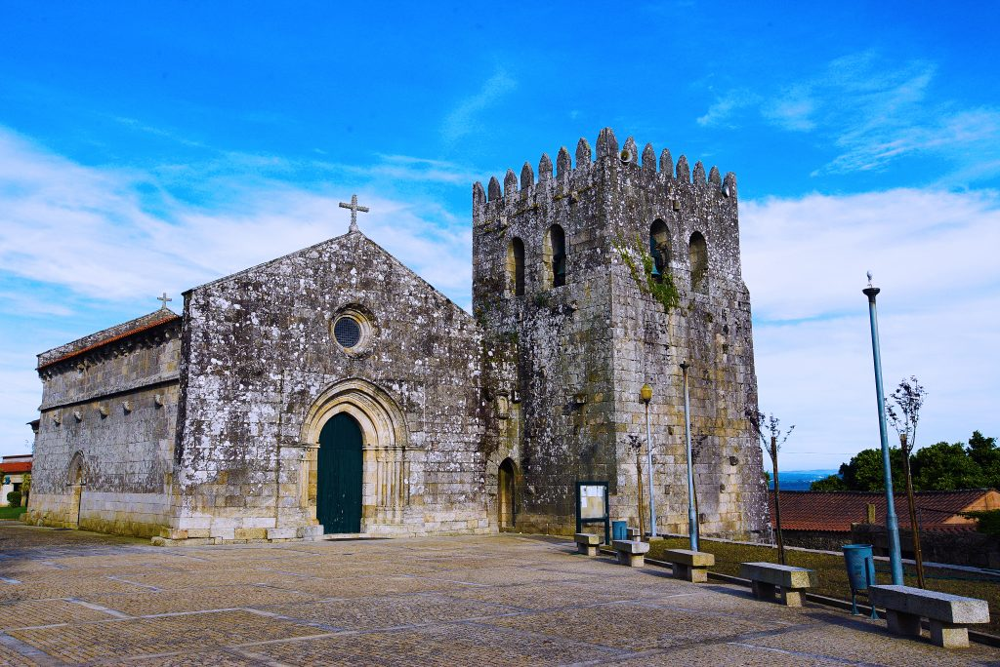
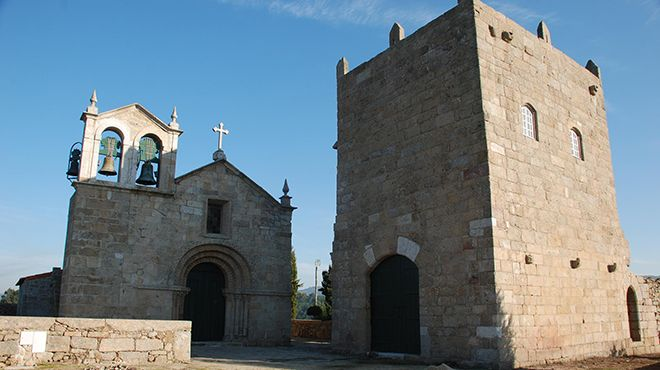

Património Imóvel
Em Barcelos existem onze monumentos nacionais, oito imóveis de interesse público e cinco monumentos em vias de classificação.
Arqueologia
O Castelo de Faria, também designado Povoado do Castelo de Faria e Ruínas do Castelo de Faria e estação arqueológica subjacente, foi um castelo medieval circundado por povoado da idade do ferro localizado na freguesia de Gilmonde.
Um dos mais importantes castelos do Entre Douro e Minho, foi erguido, isolado, no alto de uma elevação na vertente norte do monte da Franqueira, dominando o caminho que ligava Barcelos ao porto de Viana. Atualmente em ruínas, inscreve-se na Região Turística do Alto Minho.
As ruínas do Castelo de Faria e a estação arqueológica subjacente estão classificados como Monumento Nacional desde 1956.

O Forno Castrejo, ou Monumento castrejo, localiza-se no sopé do Monte do Facho, na freguesia de Galegos Santa Maria.
É um monumento com um forno destinado a banhos. Os balneários para práticas do tipo "sauna", realizavam-se com vapor, produzido por pedras aquecidas pelo fogo, seguidos de banhos de água fria.
Remonta à Idade do Ferro, tendo sido descoberto na década de 1970.
Encontra-se classificado como Monumento Nacional desde 1986.
O Forno dos Mouros, também denominado Balneário Romano em Carvalhas, são restos arqueológicos localizados numa zona rural, na base do castro do Monte da Saia, junto à Fonte da Pegadinha de Nossa Senhora, na freguesia de Carvalhas.
Trata-se de um balneário castrejo da Idade do Ferro.
Encontra-se classificado como Imóvel de Interesse Público desde 1951.
A Laje dos Sinais, também designada por Gravuras rupestres da Laje dos Sinais ou Penedo Laje dos Sinais, localiza-se numa zona de mata no sopé do monte da Saia, na freguesia de Chorente, Goios, Courel, Pedra Furada e Gueral.
Constitui um penedo onde se encontram gravuras de arte rupestre.
As gravuras remontam à Idade do Bronze, em formas geométricas, que parecem associar uma suástica a círculos concêntricos e pequenas covas.
Encontra-se classificada como Imóvel de Interesse Público desde 1951.
O Castro de Monte Redondo, Castro Monte Cossourado ou Castro de São Mamede, é um castro situado na antiga freguesia de Guisande.
Com um sistema defensivo constituído por três linhas de muralha, o castro possui vestígios de habitações de forma circular e rectangular, semelhantes à de outros povoados protohistóricos.
Está classificado como Monumento Nacional desde 23 de junho de 1910.
Trata-se de um sítio arqueológico constituído pelas ruínas da abside da capela mor da igreja românica do Mosteiro de Banho e pelos seus terrenos adjacentes, onde se presume existir os restos arquitetónicos daquele antigo espaço monástico, fundado no século XV e reduzido a templo paroquial naquela data e tendo a paróquia sido anexa à de Santa Maria de Vila Cova durante as primeiras décadas do século XIX.

Conjunto que engloba a primitiva igreja da extinta paróquia de Mondim e o seu cemitério, cuja cronologia ascende ao período pré-nacional e pré-românico.
Arquitetura Civil

O teatro Gil Vicente foi e continua a ser um equipamento cultural de grande importância para os barcelenses.
Sem qualquer espécie de dúvida, constituiu, durante a maior parte do século vinte, a única casa capaz de albergar as realizações de grande vulto que ocorreram em Barcelos, quer de ordem cultural e recreativa, quer mesmo de ordem política e religiosa. Por ali passaram várias gerações que se enriqueceram culturalmente, sobretudo das classes menos favorecidas que não tinham dinheiro para se deslocarem a outras terras para assistirem à representação de peças de teatro e verem cinema.
Instalado na antiga Casa dos Mendanhas, uma construção emblemática do património setecentista da cidade, o Museu de Olaria de Barcelos, reúne um valioso espólio constituído por peças provenientes de todo o território português e dos países lusófonos, sendo o núcleo principal composto por peças recolhidas no concelho.
O Solar dos Pinheiros, Palácio dos Pinheiros ou Paço dos Condes de Barcelos, é um histórico edifício barcelense construído por volta do século XV. O Solar dos Pinheiros encontra-se classificado como Monumento Nacional desde 1910.

É uma edificação gótica em pedra do início do século XIV, entre 1325 e 1330, mandada construir pelo Conde D. Pedro, para fazer a ligação entre Barcelos e Barcelinhos.
De notar, a estrutura em cinco arcos que a compõe, sendo o central mais alto, o que representa um traço estrutural da época.
Está classificada como Monumento Nacional desde 1910.
Arquitetura Militar

É um paço característico dos fins da Idade Média, construído na primeira metade do século XV, por ordem de D. Afonso 8.º Conde de Barcelos, 1.º Duque de Bragança. O Museu Arqueológico foi aí instalado no início do século XX. Está classificado como Monumento Nacional desde 1910.

Trata-se de um pelourinho em estilo gótico, de fuste octogonal que termina em gaiola, como o pelourinho de Vila Real. Pode-se considerar essa gaiola em granito, como uma graciosa lanterna lavrada, típica do gótico final. A sua base atual é formada por quatro degraus octogonais.
Estima-se que terá sido construído nos finais do século XV ou princípios do século XVI.
Atualmente encontra-se junto à Igreja Matriz de Barcelos, próximo às ruínas do Paço dos Condes de Barcelos. Encontra-se classificado como Imóvel de Interesse Público desde 1933.
No início do século XV, D. Afonso, 8º Conde de Barcelos, mais tarde 1º Duque de Bragança, empenhou-se em construir à volta de Barcelos uma sofisticada cerca urbana. A Torre da Porta Nova é a única das três principais portas da muralha que chegou até à atualidade. Em 1926, foi classificada como Monumento Nacional.
Arquitetura Religiosa
Palco central da tradicional Festa das Cruzes (3 de maio). A sua origem está relacionada com o aparecimento misterioso de uma cruz de terra negra no chão barrento do Campo da Feira, em dezembro de 1504. O templo atual abriu ao culto em 1710. É um templo em estilo barroco, com planta centrada em cruz grega recoberto por cúpula. Destaca-se o altar-mor de talha dourada barroca e o altar do lado do Evangelho onde figura uma imagem do Senhor da Cruz adquirida, segundo a tradição, na Flandres em 1505.
Constitui um dos mais notáveis exemplares de arquitetura barroca de influência italiana no país.
Encontra-se classificada como Imóvel de Interesse Público desde 1958.

Faz parte do antigo convento de freiras beneditinas, mandado edificar pelo Arcebispo D. Rodrigo de Moura Teles, em 1707. De arquitetura exterior simples, possui um interior riquíssimo. De uma só nave, com capela-mor de estilo barroco. Possui um exuberante púlpito de talha dourada e policromada. Destacam-se ainda as paredes revestidas a azulejos azuis e brancos historiados, dos inícios do século XVIII, formando um conjunto com medalhões figurados e legendados, e, finalmente, o teto é constituído por magníficos caixotões que ilustram a vida de S. Bento.
Monumento do séc. XIV, a Igreja Matriz de Barcelos, dedicada a Santa Maria Maior, mantém a robustez medieval na aparência, embelezada por alguns elementos decorativos e arquitectónicos que revelam a imposição do estilo gótico numa estrutura românica.
A iniciativa da sua construção pertence a D. Pedro, 3º Conde de Barcelos que nos deixou a sua assinatura através do brasão de armas que podemos ver nas arquivoltas do portal principal.
No interior, os capitéis historiados românicos afirmam o ambiente medieval contrastando com os painéis de azulejo de 1721, com cenas da vida de Nossa Senhora. Nas várias capelas laterais destaca-se a decoração barroca, em particular os altares de talha dourada. Na capela mor encontram-se ainda algumas telas maneiristas representando a Anunciação e a Adoração dos Pastores.
Foi classificada como Monumento Nacional em 1927.
A Igreja de São Salvador de Vilar de Frades, também referida como Igreja de Vilar de Frades e Igreja do Mosteiro dos Lóios, localiza-se no sopé do monte Airó, junto à margem esquerda do rio Cávado, na freguesia de Areias de Vilar e Encourados.
Faz parte do complexo do convento da Congregação dos Cónegos Seculares de S. João Evangelista que aí estabeleceu a sua primeira casa-mãe, tendo sido, antes, um mosteiro beneditino.
A sua arquitectura é notável, especialmente pelo abobadamento da igreja, principalmente na capela-mor e transepto, bem como pelo portal manuelino da fachada principal, ao lado do qual se encontra, na torre sul, um portal e uma janela de características românicas, construídos, contudo, já no século XIX com vestígios do mosteiro original.
Encontra-se classificada como Monumento Nacional desde 1910.
Construída, no século XVI, pela extinta Ordem Terceira de S. Francisco, a igreja e o seu convento foram entregues, em 1836, à Irmandade de Nossa Senhora da Misericórdia de Barcelos. Voltada para o Campo da República (também conhecido como Campo da Feira), a Igreja da Misericórdia de Barcelos assume-se atualmente como um relevante edificado de Barcelos, com uma inegável importância patrimonial, histórica e cultural.
No alto do Monte da Franqueira existe a Ermida da Nossa Senhora que diz a lenda ter sido instituída por intenção de Egas Moniz, aio do rei D. Afonso Henriques. A cabeceira da capela ainda apresenta elementos românicos importantes, como a cruz cimeira do arco cruzeiro, as frestas, e os cachorros. A cabeceira foi reformada durante o séc. XVI, em estilo manuelino.
Entre 1670 e 1710, a Ermida da Nossa Senhora da Franqueira foi ampliada, tendo ficado com a aparência atual.
Foi classificada como Imóvel de Interesse Público em 1959.

As origens da fundação da Igreja de Abade de Neiva parecem remontar ao século XII e à iniciativa da rainha D. Mafalda. O monumento atual, composto por igreja e torre, é do século XVI e revela-se um importante marco do estilo românico/gótico na bacia do Cávado, não pela sua dimensão mas por ser contemporâneo da fundação da nacionalidade, associado ao processo de reconquista.
É Monumento Nacional desde 1927.

A Igreja e Torre de Manhente, também designados por Mosteiro de São Martinho de Manhente ou Mosteiro de Manhente, ou ainda Castelo de Manhente, localizam-se na atual freguesia de Manhente.
A construção da antiga igreja monacal românica remonta ao século XII. Este monumento será, inclusivamente, uma das primeiras construções românicas nacionais. Como tal, constitui um exemplar de valor inestimável dos primórdios da nossa história da arte e da fundação da nacionalidade.
É Monumento Nacional desde 1915.